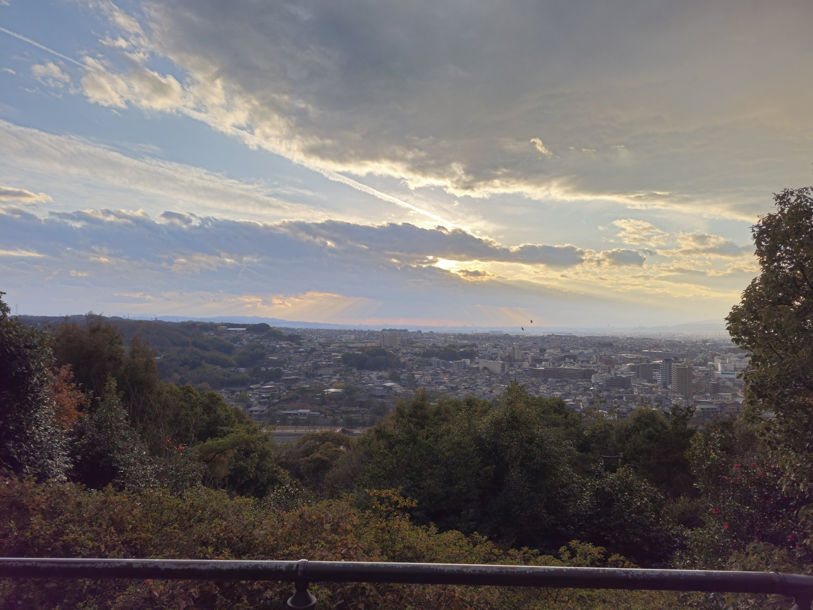
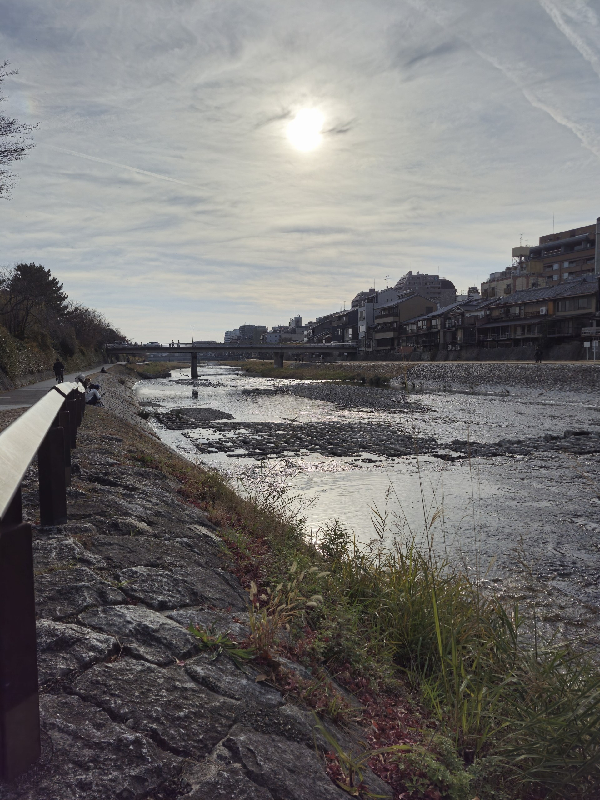
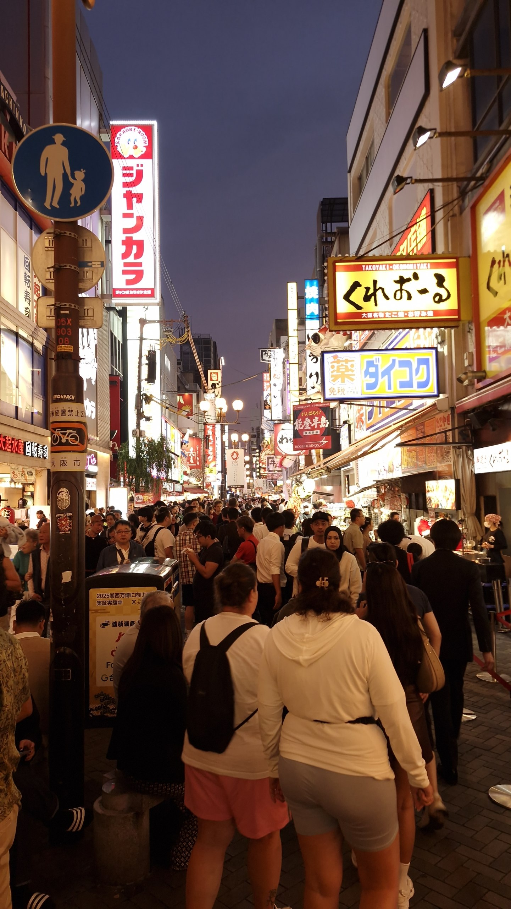
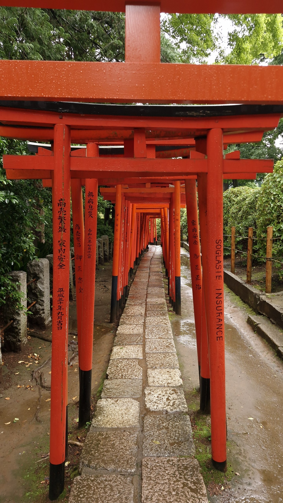
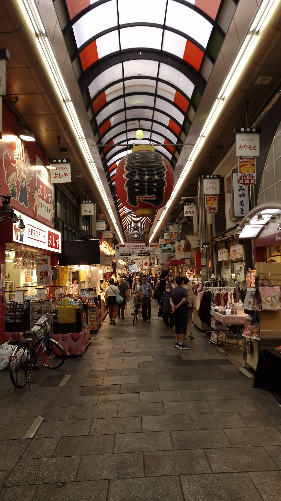
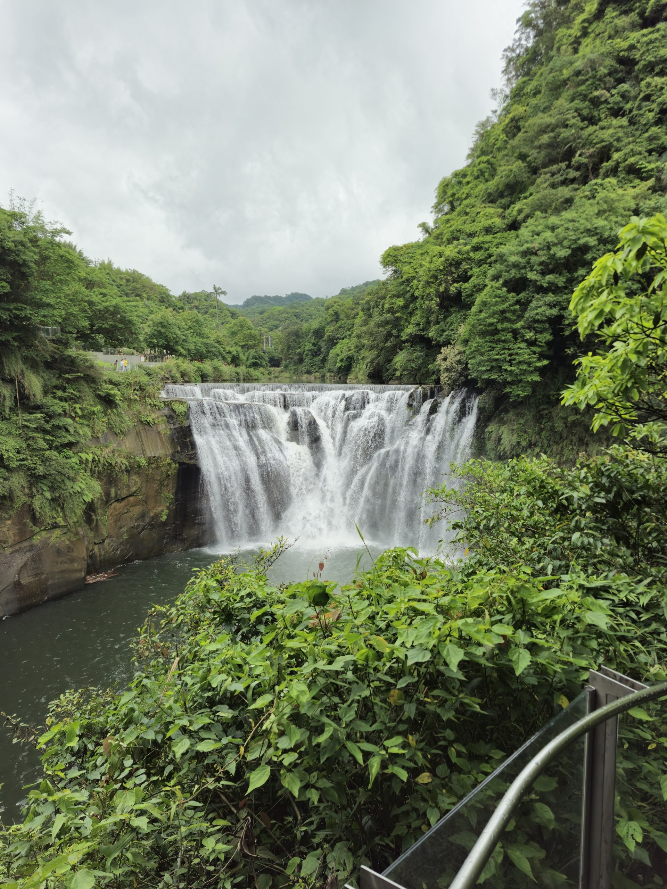
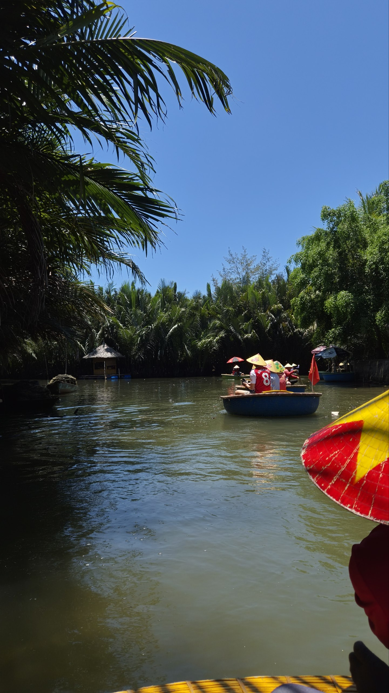
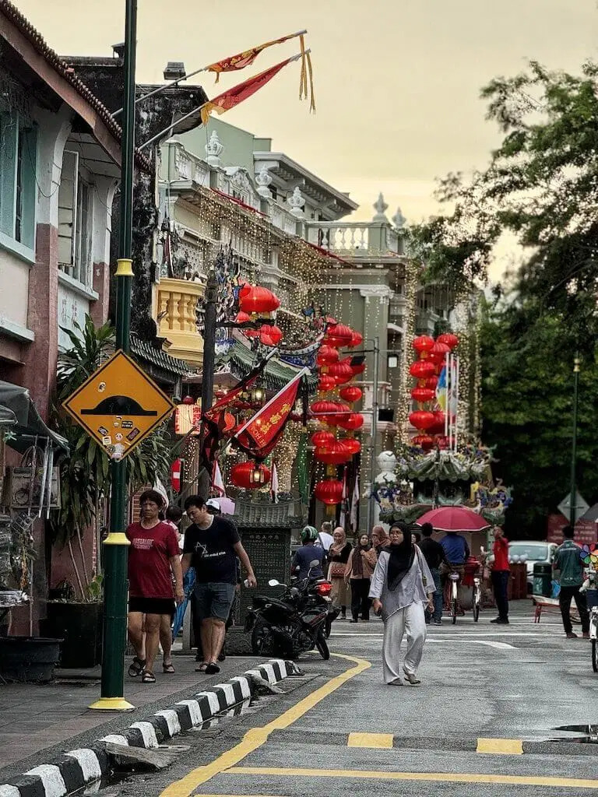
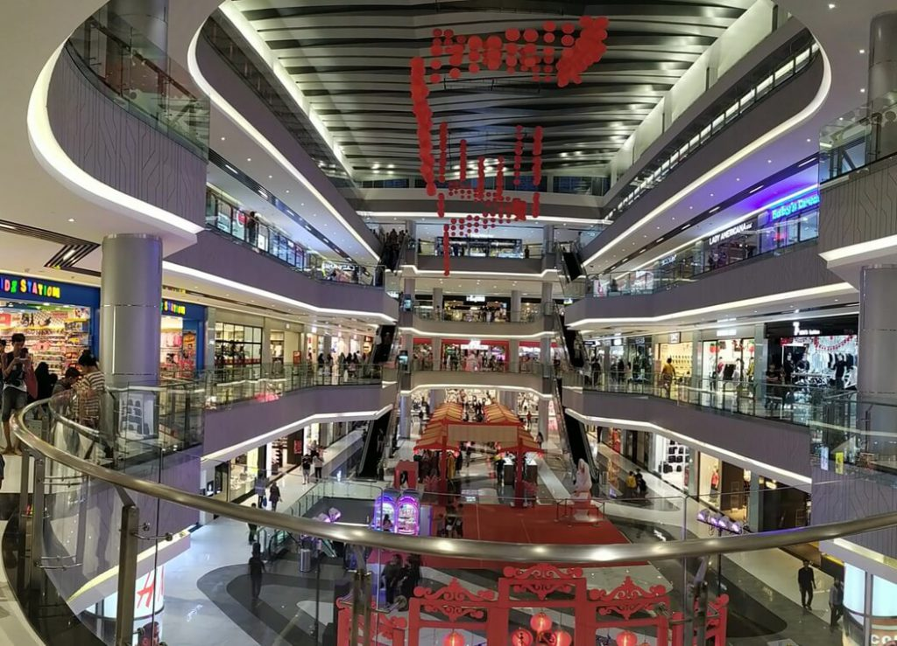

📍 KIYOMIZU-DERA, KYOTO
Who am I?
Jeffers —
Out of Class,
Wandering around.
The best stories usually come from unplanned detours and getting a little lost. This is an archive of my time spent off-campus chasing new horizons, and figuring things out as I go.
About Me
I'm Jeffers, a Year 2 student currently studying Information Systems at Singapore Management University (SMU).
I take deep pride in my work, combining a meticulous eye for detail with a drive for impactful results. Building on my strong foundation of Big Data & Analytics from Polytechnic, my passion lies at the intersection of data analytics and programming.
Outside of University, you can usually find me fiending for bubble tea, unwinding with whatever game I'm currently hooked on, or probably spending way too much time doomscrolling away...
Favorite Destination: Japan / 日本
The one place I always find myself missing. Between the stunning landscapes, rich culture, and unmatched food, Japan remains a destination I will never tire of exploring.
The Pause Between the Trains — a short film





Other Destinations
A visual collection of moments and memories from my journey.
South Korea
Seoul

Taiwan
Taipei

Vietnam
Da Nang

Malaysia
Kuala Lumpur

Indonesia
Batam
Australia
Perth
WAD2 Assignments
Week 1
Week 2
Week 3